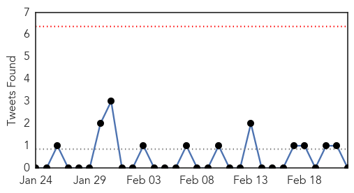

30 Day Trends
Web: 0 alerts, 7 warnings
Twitter: 0 alerts, 0 warnings
Top Articles:
- 0.917
- Chicago Tribune
- 0.917
- Chicago Tribune
- 0.917
- Chicago Tribune
- 0.917
- Chicago Tribune
- 0.917
- Chicago Tribune
- 0.917
- Chicago Tribune
- 0.910
- The world windows to Thailand
- 0.879
- Listeria Outbreak Hits California and Maryland
- 0.866
- U.S. welcomes release of Ukraine's Tymoshenko
- 0.866
- Tymoshenko sure Ukraine will join EU in near future
- 0.866
- Turkish police fire tear gas to disperse protest in Istanbul
- 0.866
- we'll work with EU to support new government in Ukraine
- 0.866
- Yanukovich says won't resign or leave Ukraine
- 0.866
- Ukraine's Yanukovich denounces "coup d'etat"
- 0.866
- Ukraine lawmakers press for release of Tymoshenko
- 0.866
- President Yanukovich is in Ukraine
- 0.866
- Venezuela's Maduro calls for dialogue with Obama
- 0.852
- Ticks Infected With Lyme Disease and New Pathogen Found in California Parks
- 0.827
- Listeria outbreak: Tainted cheese to blame, 1 death and 7 sickened by outbreak
- 0.808
- Doctors remain divided on rabies treatment protocol
- 0.760
- Listeria outbreak linked to Hispanic-style cheese
- 0.755
- Listeria outbreak linked to cheese kills one person makes 7 sick
- 0.742
- Listeria Outbreak Sickens Three Newborns In Maryland
- 0.707
- Mugabe returns from medical checks in Singapore
- 0.664
- Norwalk-like outbreak closes Langley gymnastics facility
- 0.662
- Multiple Sclerosis (MS) may be detected by antibody marker
- 0.584
- China reports four more bird flu cases
- 0.557
- WFP chief sounds malnutrition warning
- 0.538
- More than 500 bed days a week lost due to norovirus outbreaks in Gloucestershire hospitals
- 0.531
- Deadly designer drug suspected in Wilson
- 0.518
- Stepping up the fight against drug-resistant malaria in SE Asia
- 0.509
- Zimbabwe president returns from medical checks in Singapore
Top Tweets:
-
No tweets found for Feb 22, 2014
Web/News Articles

Tweets
Article Locations
Article Confidences